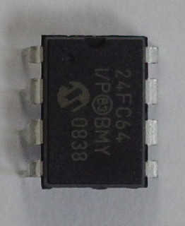
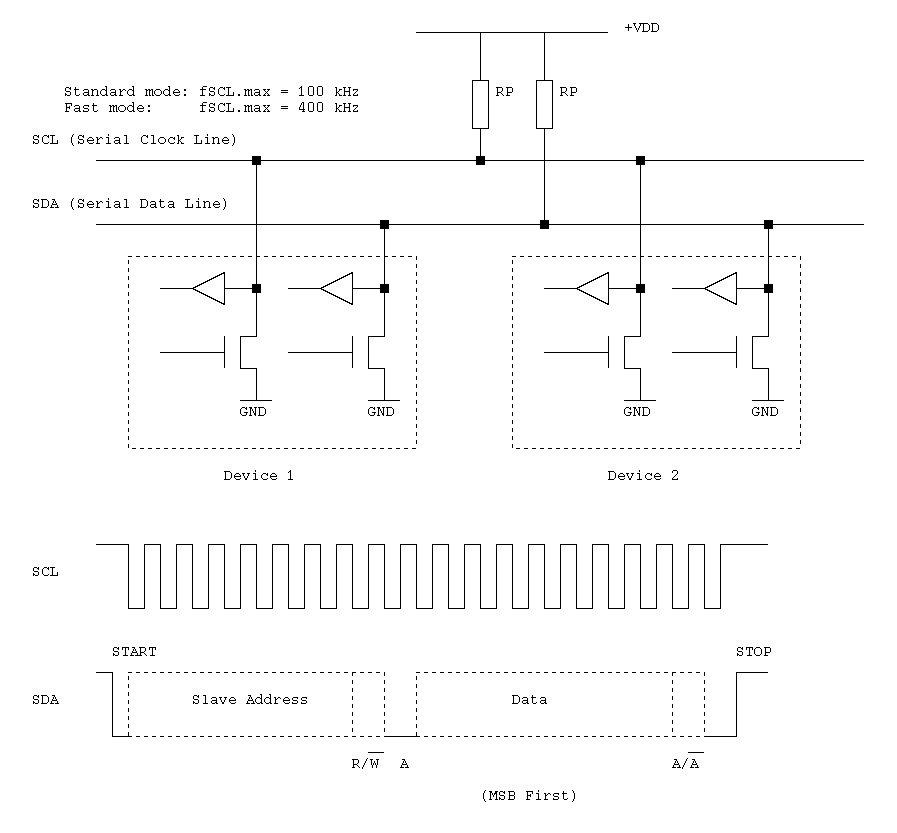
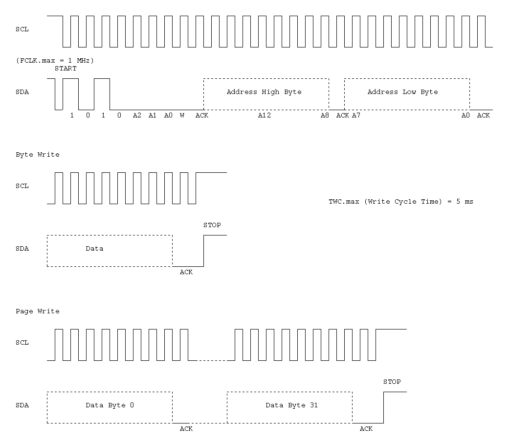
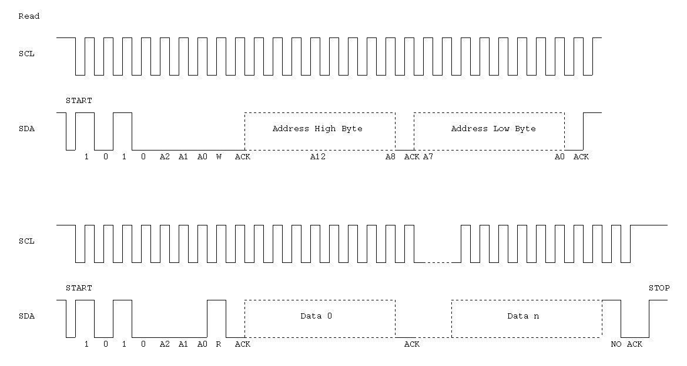

<!-- header -->

<h1>Microchip 24FC64</h1>

<p>The 24FC64 is a 64 Kbit (8192 x 8-bit) EEPROM.
It has an I2C interface.</p>

<p>
</p>

<section>
	<h2>I2C interface</h2>

	<p></p>
	<p></p>
	<p></p>	
</section>

<!-- footer -->

